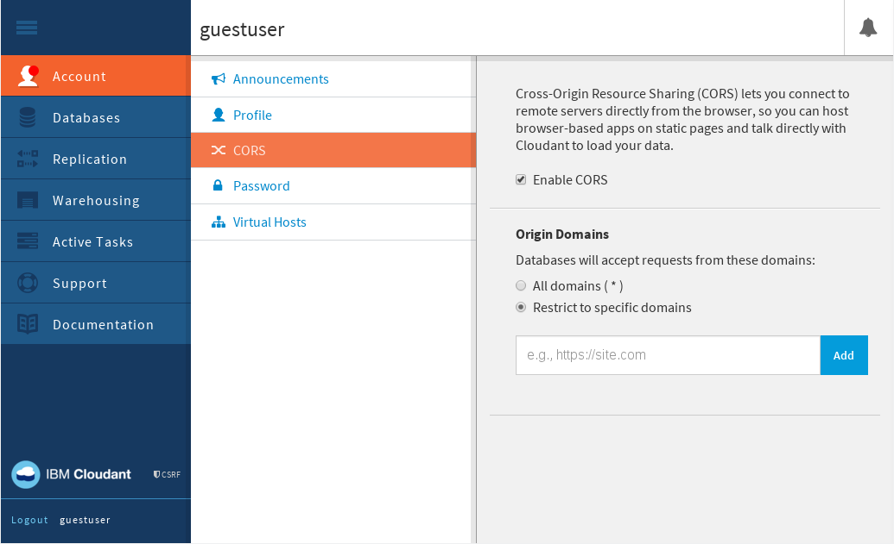

is a mechanism that allows resources such as JSON documents in a
Cloudant database to be requested from Javascript running on a website loaded from another domain.
is a mechanism that allows resources such as JSON documents in a
Cloudant database to be requested from Javascript running on a website loaded from another domain.Cross-origin resource sharing (CORS) is a mechanism that allows resources such as JSON documents in a
Cloudant database to be requested from Javascript running on a website loaded from another domain.
These "cross-domain" requests would normally be forbidden by web browsers, due to the same origin security policy .
CORS defines a way in which the browser and the server interact to determine whether or not to allow the request. For Cloudant, there are two use cases in which CORS might be a good solution.
https://www.example.com and you want scripts on this website to be able to access data from https://example.cloudant.com. To do this, add https://www.example.com to your list of allowed
origins. The effect is that scripts loaded from this domain are then allowed to make AJAX requests to your Cloudant databases. By using HTTP authorization with CORS requests, users of your application are able to access their database only.CORS is supported by all current versions of commonly used browsers.
Note: Versions of Microsoft Internet Explorer prior to version 10 offer partial support for CORS. Versions of Microsoft Internet Explorer prior to version 8 do not support CORS.
Storing sensitive data in databases that can be accessed using CORS is a potential security risk. When you place a domain in the list of allowed origins, you are trusting any of the Javascript from the domain. If the web application running on the domain is running malicious code or has security vulnerabilities, sensitive data in your database might be exposed.
In addition, allowing scripts to be loaded using HTTP rather than HTTPS, and then accessing data using CORS, introduces the risk that a man in the middle attack might modify the scripts.
To reduce the risk:
"origins": ["*"] unless you are certain that:
| Method | Path | Description |
|---|---|---|
GET |
/_api/v2/user/config/cors |
Returns the current CORS configuration. |
PUT |
/_api/v2/user/config/cors |
Changes the CORS configuration. |
withCredentials = true.PUTting a JSON document with the example structure to /_api/v2/user/config/cors sets the CORS configuration. The configuration applies to all databases and all account level endpoints in your account.
Example request, using HTTP:
PUT /_api/v2/user/config/cors HTTP/1.1
Host: $USERNAME.cloudant.com
Content-Type: application/json
Example request, using the command line:
curl https://$USERNAME:$PASSWORD@$USERNAME.cloudant.com/_api/v2/user/config/cors \
-H 'Content-Type: application/json' \
-X PUT \
-T cors.json
Example JSON file for setting the CORS configuration:
{
"enable_cors": true,
"allow_credentials": true,
"origins": [
"https://example.com",
"https://www.example.com"
]
}
The response tells you whether the configuration has been updated successfully.
Example response:
{
"ok": true
}
You can find out the current CORS configuration by sending a GET to the /_api/v2/user/config/cors endpoint.
Example request to GET the current CORS configuration, using HTTP:
GET /_api/v2/user/config/cors HTTP/1.1
Host: username.cloudant.com
Example request to GET the current CORS configuration, using the command line:
curl https://$USERNAME:$PASSWORD@$USERNAME.cloudant.com/_api/v2/user/config/cors
The response is the current CORS configuration in a JSON document.
Example response:
{
"enable_cors": true,
"allow_credentials": true,
"origins": [
"https://example.com",
"https://www.example.com"
]
}
CORS support is available in the Cloudant dashboard.
You can update your CORS settings using the CORS tab within the dashboard:

To see the current CORS configuration, simply open the CORS tab in the dashboard.
You can enable or disable CORS using the Enable CORS checkbox. This corresponds to the enable_cors option when changing the CORS configuration from within an application.
To specify that CORS is enabled for all domains, select the All domains (*) option.
To specify that CORS is enabled only for exact origin domains, list each of the domains or subdomains using the Restrict to specific domains option. For each domain, provide a full URL, preferably using the https prefix for
additional security.